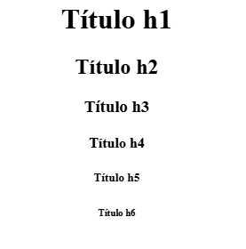
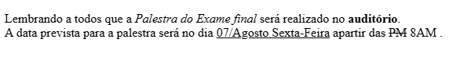
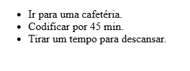
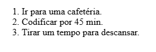

Um elemento geralmente consiste em uma tag de abertura, o conteúdo e uma tag de fechamento. Uma tag é colocada entre colchetes angulares.
<p>Hello World!</p>
<p> É a tag de abertura.
Hello World! É o conteúdo.
</p> É a tag de fechamento.
O <p> é um elemento de parágrafo que informa ao navegador que o conteúdo interno é texto de "parágrafo".
<body>
<p>üëã Eu sou um novo desenvolvedor!</p>
</body>
O <body> é o elemento que define o "corpo" de um documento HTML e é onde será armazenado qualquer conteúdo que queremos exibir ao usuário:
<body> É a tag de abertura inicia o "corpo".
<p>üëã eu sou um novo desenvolvedor!</p> √â algum texto em um elemento de parágrafo.
</body> É a tag de fechamento encerra o "corpo".
Nota: Só pode haver um <body> elemento em um arquivo.
Embora recuar o código HTML não seja necessário, fazer isso é uma boa prática porque torna seu código mais fácil de ler e visualizar os níveis de alinhamento.
Veja como recuar o bloco de código anterior:
<body>
<p>üëã Eu sou um novo desenvolvedor!</p>
</body>
Veja como é muito mais fácil ler dessa maneira!
Recomendamos dois espaços para recuos ou use a tecla Tab.
Vejamos mais alguns elementos.
Suponha que queremos adicionar um título ao nosso site que exiba uma notícia. Veja como faríamos isso usando um <h1> elemento de título e um <p> elemento de parágrafo:
<body>
<h1>Not√≠cias Quentes! üö®</h1>
<p>Político é encontrado no banheiro do hotel com a cueca cheia de dinheiro.</p>
</body>
Existem seis níveis de títulos, de <h1> a <h6>.
Observação: somente um <h1> deve ser usado em um arquivo .html.
Suponha que também queiramos adicionar uma nova linha dentro de um elemento de parágrafo. Pressionar enter não adiantará, pois o HTML ignora múltiplos espaços e quebras de linha dentro dos elementos.
Então devemos usar a <br> tag break aqui!
A <br> tag break adiciona uma quebra de linha:
<body>
<h1>Notícias Quentes!</h1>
<p>Super promoção nos cinemas brasileiros deixa o povo maluco.<br>Ingressos se esgotaram nos primeiros dias.</p>
</body>
Uma tag de fechamento automático não precisa ser fechada manualmente por uma tag de fechamento... ela não possui um fechamento separado </tag>. A tag break é a primeira que encontramos. O código final se tornará:

Agora que sabemos como exibir texto básico, como colocar frases em negrito, colocar novas palavras em itálico, sublinhar frases importantes e muito mais? üî°
Para isso, precisamos de elementos de formatação de texto! Eles deixam os textos padrão mais elegantes.
Aqui estão alguns exemplos comuns:
<b> elemento para texto em negrito.
<i> elemento para colocar texto em itálico.
<u> elemento para sublinhar o texto.
<s> elemento para linha estar no meio do texto.
É assim que eles são usados:
<b>Elemento para texto em negrito.</b>
<i>Elemento para colocar texto em itálico.</i>
<u>Elemento para sublinhar o texto.</u>
<s>Elemento para linha estar no meio do texto.</s>
O resultado é assim:

Observação: o <b> elemento serve apenas para aplicar negrito ao texto estilisticamente; o HTML também tem um <strong> elemento usado para transmitir que o conteúdo interno é importante, além de estilizá-lo para ficar em negrito.
Aqui estão todas as quatro tags em ação em um anúncio de sala de aula:
<p>Lembrando a todos que a <i>Palestra do Exame final</i> será realizado no <b>auditório</b>.<br>
A data prevista para a palestra será no dia <u>07/Agosto Sexta-Feira</u> a partir das <s>PM</s>8AM.</p>
Isso ficará parecido com:
Observação: as tags acima são boas para aprender a estilizar texto com HTML básico, mas não são mais práticas recomendadas. Outras maneiras de estilizar texto serão abordadas no curso de CSS.
Listas são uma ótima maneira de gerenciar o tempo, descobrir o que precisa ser feito e lembrar das coisas. E é bom quando marcamos os itens como concluídos!
Aprenderemos sobre dois tipos de listas HTML:
<ul> Listas não ordenadas
<ol> Listas ordenadas
Para listas não ordenadas, também conhecidas como marcadores, comece com a <ul> tag e envolva cada item em um <li> elemento de item de lista. Assim:
<ul>
<li>Ir para uma cafetéria.</li>
<li>Codificar por 45 min.</li>
<li>Tirar um tempo para descansar.</li>
</ul>

Isso <ul> é ótimo para listar coisas em qualquer ordem. Mas e se quiséssemos numerar a lista?
Para listas ordenadas, também conhecidas como listas numeradas, usamos o <ol> elemento:
<ol>
<li>Ir para uma cafetéria.</li>
<li>Codificar por 45 min.</li>
<li>Tirar um tempo para descansar.</li>
</ol>

O primeiro site de 1991 ainda está ativo: TheProject.html
O que voc√™ notou? Al√©m de ser bem simples, tem um monte de links! üîó
Os links são parte integrante da ideia da internet. São eles que permitem aos usuários se conectar a outros sites e navegar na web.
Então, como adicionamos um link para nossa página web?
Podemos usar o <a> elemento âncora! Esta tag de link nos permite adicionar um hiperlink a um trecho de texto.
Vamos ver como podemos fazer isso:
<a href="https://archive.org/web">Internet Archive</a>
Aqui, o <a> elemento âncora é semelhante a outras tags, onde o texto dentro é o que é exibido. Mas e quanto ao href interior da tag de abertura?
Uma href (referência de hiperlink) é uma referência ou ponteiro para outro site que está vinculado em nosso HTML. Ao clicar no texto "Internet Archive", o HTML redirecionará para esse site, que no nosso caso é https://archive.org/web.
Observação: isso também pode ser usado para apontar para um e-mail ou número de telefone usando um parâmetro mailto:, tel: ou sms:
<a href="mailto:teste123@gmail.com">üìß</a>
<a href="tel:212-555-2368">ü§ô</a>
<a href="sms:320-250-HTML">üí¨</a>
E se quisermos adicionar imagens? Podemos usar um formato semelhante, mas com o <img> elemento de imagem.
<p>Aqui um gato fofo:</p>
<img src="https://placekitten.com/200/200" alt="Gato">
O <img> elemento de imagem é outra tag de fechamento automático, portanto não tem uma tag de fechamento.
O src atributo, que significa “fonte”, especifica o caminho do arquivo da imagem.
"https://placekitten.com/200/200" é o caminho da imagem. Para a maioria das imagens, o caminho do arquivo pode ser encontrado clicando com o botão direito na imagem e selecionando "Copiar endereço da imagem".
Exemplo de como fica:
Aqui um gato fofo:

[Fim da primeira parte sobre HTML]